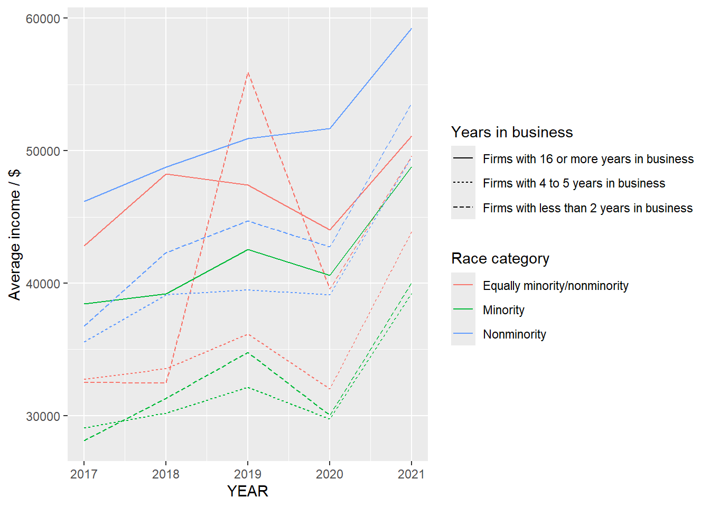

Call:
lm(formula = average_income ~ Population + SEX_LABEL, data = temp)
Residuals:
Min 1Q Median 3Q Max
-20797 -5483 -951 5017 46505
Coefficients:
Estimate Std. Error t value Pr(>|t|)
(Intercept) 3.315e+04 5.657e+02 58.59 < 2e-16 ***
Population 3.253e-05 6.342e-06 5.13 4.12e-07 ***
SEX_LABELMale 7.673e+03 7.033e+02 10.91 < 2e-16 ***
---
Signif. codes: 0 '***' 0.001 '**' 0.01 '*' 0.05 '.' 0.1 ' ' 1
Residual standard error: 7980 on 513 degrees of freedom
Multiple R-squared: 0.2171, Adjusted R-squared: 0.214
F-statistic: 71.11 on 2 and 513 DF, p-value: < 2.2e-16Analysis
Here we provide a detailed analysis using more sophisticated statistics techniques.

The factors of affecting employment: A comprehensive analysis of race, job type, income and sex
Introduction
The U.S. job market has changed a lot in recent years because of new technology, the effects of globalization, and the needs of different industries. These changes have made it harder for people to compete for jobs, and many workers, researchers, and policymakers are trying to figure out what’s behind these shifts and how they impact job opportunities and participation in the workforce.
This study focuses on understanding the patterns of employment in the U.S., especially looking at how race, income, and job types interact to affect who gets jobs and how much they earn. To do this, analysis can be conducted with the data from the U.S. Census Bureau and the National Center for Science and Engineering Statistics (NCSES) to study job trends from 2017 to 2021.
The main questions include:
Do job opportunities differ for people of different racial and ethnic backgrounds? How does the kind of job someone has relate to their income level? Are there big differences in who participates in the workforce across various groups, and what might be the reasons for these gaps?
The analysis will conduct a model and use charts and tables to make these ideas clearer, showing trends and differences in jobs and income. By breaking this down, the goal is to understand the social and economic factors that shape today’s U.S. job market in a way that’s easy to grasp.
Date Cleaning
For our initial data cleaning, we started by selecting a subset of the data that contains key demographic and business characteristics, focusing on columns with minimal missing values to ensure a more reliable analysis. We first removed rows with significant missing data to avoid skewing our results but kept those with minor gaps for further inspection. As part of exploratory data analysis (EDA), we checked for unusual patterns, such as outliers, unexpectedly frequent or infrequent values, and relationships that align with or deviate from known trends. Below is an initial visualization showing the distribution of businesses by owner race and industry, helping us spot potential data inconsistencies or biases.
Modeling and Inference
To better understand the factors that influence employment, we used a linear regression model. This model helps us see how different variables (or predictors) are related to employment and whether they have a positive or negative impact. To visualize the relationships and patterns in the data, we used ggplot.
Through these plots, the trend, such as how employment rates change across different income groups or industries. The uncertainty in this analysis can be calculated by looking at the confidence intervals for predictors and p-values to assess how reliable the results are. The results of the model indicated that both race and gender coefficients were positive, suggesting that white people, as well as males, are more likely to achieve higher income levels.
Analysis
- Race and employment
One of the issues in the analysis of employment data is the disparity between different racial groups, reflecting structural inequality in the labor market.

The line graph shows the average number of employees across racial categories from 2017 to 2021, excluding “Total”, “Unclassifiable”, and “Classifiable” categories. The line for the “White” population (nonminority) consistently shows the highest average employment numbers. While other racial groups like “Asian”, “Black or African American” have comparatively lower and more consistent employment averages over the years.
In 2018, almost all races had the largest increase in average employment, especially for the “White” category. Based on the background information, we can infer that the reason might be attributed to the strong economic growth in the U.S., which increased job availability. This likely benefited the largest demographic group (“White”) more due to the pre-existing economic advantages.

This graph shows the impact of race and years in business on average income levels from 2017 to 2021. Same as the previous analysis, “Nonminority” firms consistently earn higher incomes compared to “Minority” and “Equally minority/nonminority” firms, with long-established businesses (16+ years) outperforming newer firms across all categories. The year 2019 saw a sharp income spike, particularly for younger firms, which suggest that the potential reason that policies such as Small Business Administration (SBA) loans, streamlined regulatory processes, increased federal procurement opportunities, and entrepreneurship promotion programs created a supportive environment for younger firms to thrive and achieve higher average incomes.
However, in the graph, from 2019 to 2020, there is a big decrease, potential because the COVID-19 pandemic in 2020 caused a notable decline across all groups, disproportionately affecting minority-owned and younger businesses. By 2021, income levels began recovering, with established “Non Minority” firms recovering more quickly than others, underscoring systemic disparities in resilience and resource access.
- Different kinds of employment
The type of jobs is also a key factor in affecting employment in the US.

The graph shows the distribution of job opportunities across various industries based on the number of firms. It demonstrates that industries like professional, scientific, and technical services dominate the job market in terms of the number of firms, indicating their pivotal role in the economy. This suggests that sectors driven by knowledge, innovation, and essential services are central to the U.S. employment landscape, reflecting broader economic trends that prioritize these areas for growth and development.
- Population and income(linear regression)
Revenue could influence income by enabling higher wages and job growth. It can be analyzed at which stage revenue has the greatest impact and the reasons behind this.
This image shows the relationship between revenue and income. The red line shows a positive relationship between revenue and income overall. This suggests that as revenue increases, income tends to rise as well. The blue curve shows a nonlinear relationship between revenue and income, which can infer that first, at low revenue, income increases quickly. Secondly, at higher revenue, income growth slows and eventually flattens or slightly decreases.
In conclusion, at the lower end of revenue, employment may increase income because businesses are growing, creating jobs, and offering higher wages. Besides, as revenue grows larger, income growth slows, potential because companies focus on efficiency rather than hiring and fewer additional employees are needed as revenue grows.
- Sex and employment
In society, there are certain gender barriers, and different types of employment may exhibit preferences or inequalities toward specific genders.

In this bar chart, male employment significantly exceeds female employment, especially for the industries like: construction, transportation and warehousing, and manufacturing. These industries traditionally employ a higher percentage of males due to the nature of the work like manual labor. The dominance in the female employment industry are health care and social assistance, administrative and support services, which are often aligned with traditional roles associated with women.
Inequality in employment resources between men and women may also imply inequality in average wages.
The chart illustrates the average wage by gender across various industries, which shows that male employees earn higher average wages overall, especially for some high-paying industries such as utilities, information, finance and insurance, showcasing gender inequality in wage distribution within these fields. In some low-wage industries like accommodation and food services, agriculture, forestry, fishing and hunting, females earn more. These patterns emphasize systemic wage disparities tied to both gender and industry type, suggesting unequal access to high-paying roles and industries for female employees.
Limitation:
- Causation vs. Correlation
In the analysis, causation and correlation may not be identified. For example, in the third theme, the relationship between revenue and income is analyzed. This observation may not imply causation. External factors such as market conditions, industry regulations, or economic trends could influence both revenue and income.
2.Assumption of data completeness and accuracy:
The analysis assumes the data is complete, accurate, and representative of the broader workforce. Incomplete or biased data, such as underreporting of wages or employment in informal sectors or some specific industries that have a significant gap between 2017-2021 and other years, could skew results.